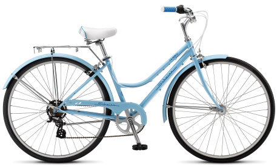
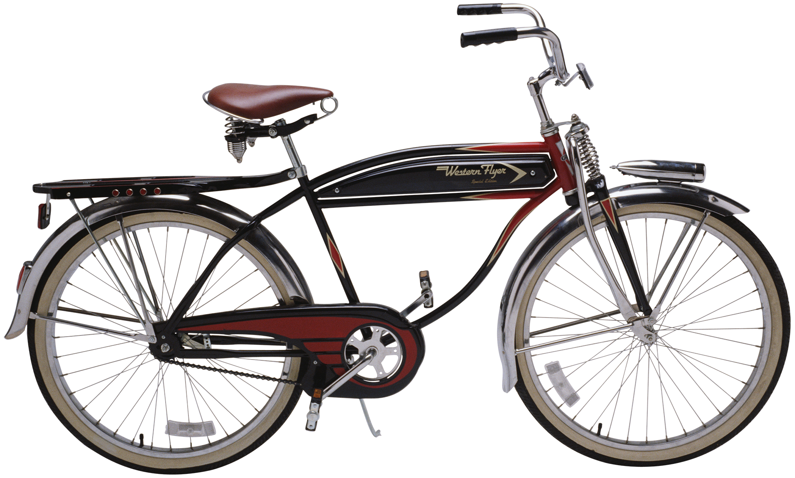
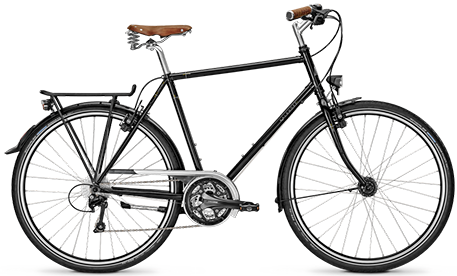

Here at Retro Wheel's, we remake old bicycles designs to give our customers the old-fashion, retro look that they desire. Many of our models are entirely new design that stay true to the vintage style.
Old models made new again
Customer Favorites


Cool Cruiser Bike
$1100
Comfortable and stylish. It takes amazing qualities to be a champion. Start by filling the backseat with your picnic items or half dozen of your favorite beverages. A rear rack has plenty of room to secure items while you run errands. During your ride — a beverage holder makes it easy to keep yourself refreshed while you ride. The padded spring saddle is designed for total comfort while you ride. The one speed cruiser has an easy to use coaster brake. Included with steel cruiser frame, padded spring bike saddle, and easy-to-use coaster brakes.

Hot Wheels Hardy
$1500
Comfortable and stylish. It takes amazing qualities to be a champion. Start by filling the backseat with your picnic items or half dozen of your favorite beverages. A rear rack has plenty of room to secure items while you run errands. During your ride — a beverage holder makes it easy to keep yourself refreshed while you ride. The padded spring saddle is designed for total comfort while you ride. The one speed cruiser has an easy to use coaster brake. Included with steel cruiser frame, padded spring bike saddle, and easy-to-use coaster brakes.

Classy Cruiser
$1200
Comfortable and stylish. It takes amazing qualities to be a champion. Start by filling the backseat with your picnic items or half dozen of your favorite beverages. A rear rack has plenty of room to secure items while you run errands. During your ride — a beverage holder makes it easy to keep yourself refreshed while you ride. The padded spring saddle is designed for total comfort while you ride. The one speed cruiser has an easy to use coaster brake. Included with steel cruiser frame, padded spring bike saddle, and easy-to-use coaster brakes.